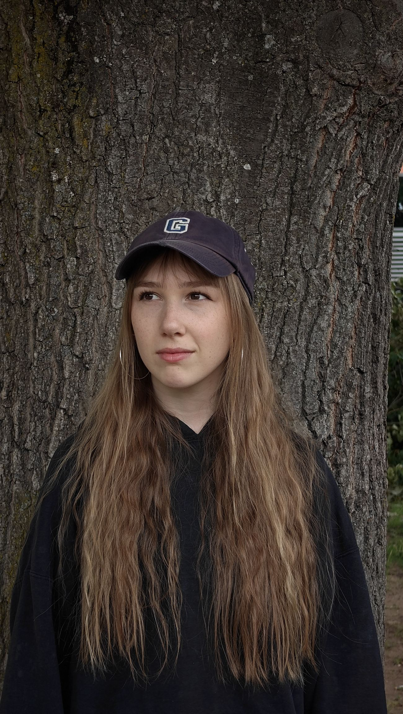

Ich mache Videos, durch die etwas bleibt — eine Geschichte, ein Gefühl, eine Perspektive, die man sonst so nicht hätte. Bevor wir über meine Arbeit reden, will ich dir erzählen, wer dahintersteckt.
Ich hab nicht schon immer gewusst, dass ich Editorin werde. Mein Weg dahin ging über ein duales Verwaltungsstudium, das ich nach eineinhalb Jahren beendet habe. Die Corona-Zeit hat's damals nicht leichter gemacht, aber der eigentliche Grund war ein anderer: Ich habe niemanden dort gesehen, dessen Job ich eigentlich haben wollte.
Seitdem bin ich diesen Weg konsequent gegangen. Kommunikationswissenschaft studiert, mich in jedem Praxismodul fürs Visuelle entschieden, mir Premiere Pro und After Effects größtenteils selbst beigebracht, weil es an der Uni schlicht zu kurz kam; als Werkstudent dem Video-Team eines Onlinejournals angeschlossen.
Meine kreative Ader hab ich vermutlich von meiner Mutter, die selbst Innenarchitektin studiert hat und mir schon früh ein Gespür fürs Detail mitgegeben hat. Von meinem Vater hab ich mitgenommen, Dinge vernünftig anzugehen — vor allem, wenn ich mit anderen zusammenarbeite: gut durchdenken, klar kommunizieren, verlässlich sein.
Was mich am Editing wirklich reizt: die Momente, in denen aus echtem Material eine Geschichte wird, die berührt. Bei einer Dokumentation über eine kleine Brauerei hab ich das zum ersten Mal richtig gespürt — heute ist das Video für die Menschen dort auch eine Erinnerung an jemanden, der nicht mehr da ist. Das hat mir gezeigt, was Schnitt eigentlich kann.
Wir passen gut zusammen, wenn du eine echte Geschichte zu erzählen hast. Das kann eine Dokumentation sein, die sich Zeit nimmt, echte Menschen und Momente einzufangen, oder ein Imagefilm, der dein Unternehmen, deine Marke oder dein Team so zeigt, wie sie wirklich sind, statt glattgebügelt und unpersönlich. Mir geht es im Schnitt nie nur um schöne Bilder, sondern um eine Botschaft, die hängen bleibt.
Bei Projekten, wo nicht viele Kreative gleichzeitig am Tisch sitzen, übernehme ich gerne die Rolle derjenigen, die ein Projekt von der Idee bis zum Schnitt eigenhändig trägt. Wichtig ist mir dabei immer ein echter Austausch: Feedback, gemeinsames Weiterdenken, kein reines Abarbeiten einer Bestellliste.
Dann sind wir ein Match, ob als gemeinsames Projekt oder weil ich für dich umsetze, was dir wichtig ist.
